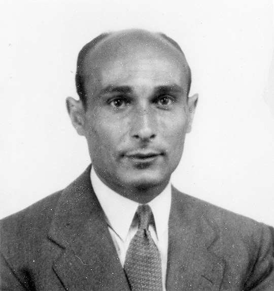
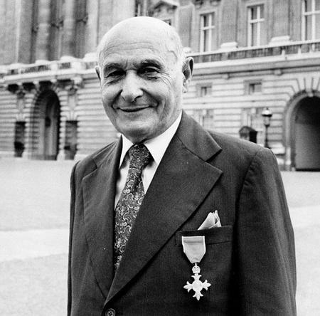

Welcome to page 2!
Jump to homepage
List of interesting video essays about Juan Pujol García, aka agent Garbo:
Codename Garbo: The Greatest Deception of World War II
Garbo: Most important double agent of all time?
The Spy Who Hilariously Won World War 2
Codename Garbo: Spanish Chicken Farmer Who Tricked Hitler, Saved D-Day & Got Awarded the Iron Cross
Agent Garbo, MI5's Greatest Actor - WW2 Documentary Special

Juan Pujol Garcia, codenamed Garbo, in 1945
©The National Archives

Juan Pujol García on his return visit to England, 1984
Source:
D-Day INFO